Research, garment design, electronics, coding, and testing
Team
Solo project
Timeline
Jan to Jul 2025
Tools
CLO 3D, Arduino, GSR sensor
Result
A working prototype, tested with an older adult living with anxiety, plus a demo video
At a glance
A garment that guides a body scan without a screen
01 / 04
01
01 · Problem
Anxiety in older adults often goes unnoticed
Anti-anxiety drugs can cause dizziness and falls at this age. Memory loss and mistrust also make it harder to accept therapy. So I asked: can a gentle, drug-free object help them calm down on their own?
“My racing heart and health worries keep me awake, yet I avoid going to the hospital.”
30Older adults surveyed
02 · Research
I surveyed 30 older adults, then interviewed some of them
I started with a questionnaire for 30 older adults. Then I talked with some of them face to face and by phone.
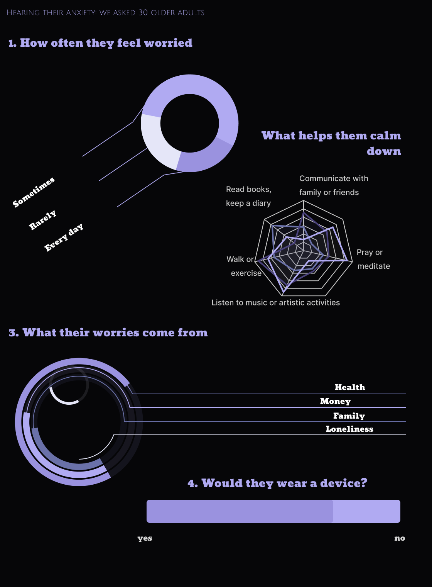
What I found
1
Their worries came from health, money, family, and loneliness.
2
They calmed down by walking, talking with family or friends, listening to music, or praying.
3
Many avoided medication.
4
Most were open to wearing a device.
Face-to-face interviews
“My racing heart and health worries keep me awake, yet I avoid going to the hospital.”
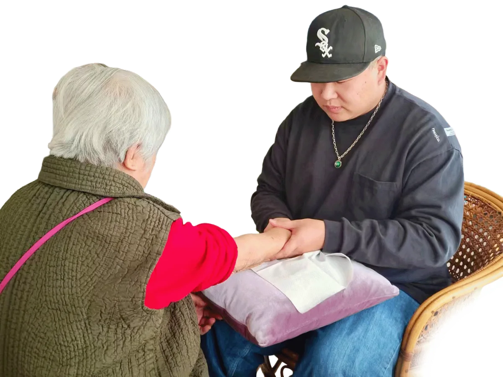
“Walking or talking helps, but when I’m alone I overthink and grow more anxious.”
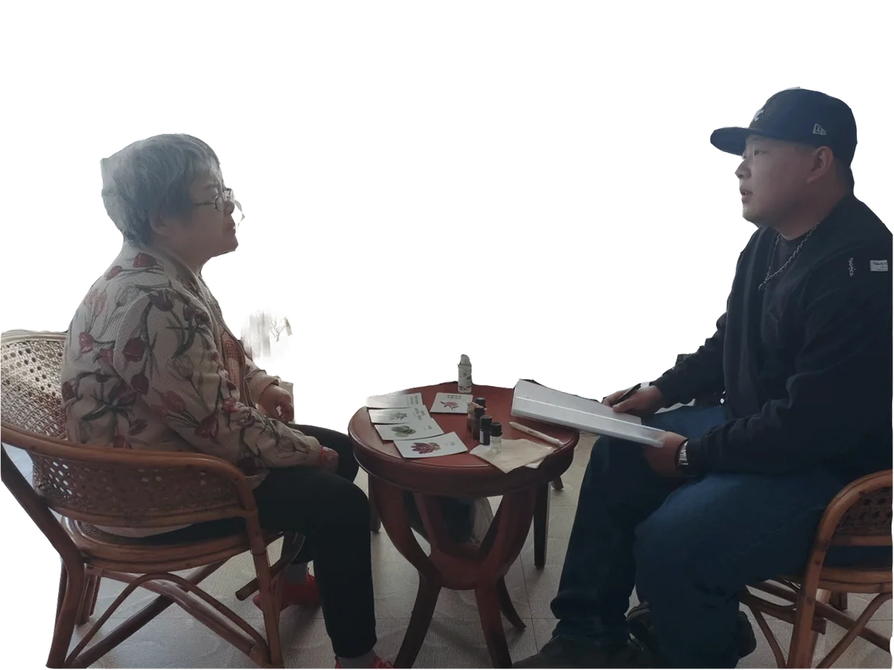
Face-to-face interviews with older adults
Telephone interviews
Mrs. Wang
70Years old
Onset 2 years ago
About
Sensitive and easily affected by family tension
Symptoms
Insomnia, night sweats, high blood pressure
Coping
Avoids medication and prefers dancing or walking
Mr. Li
68Years old
Onset 6 months ago
About
Worries about memory loss and declining focus
Symptoms
Insomnia, high blood pressure, trouble focusing
Coping
No medication; walks and plays chess to ease stress
Mr. Zhou
63Years old
Onset 1 year ago
About
Gentle, but keeps his anxiety in and rarely shares his feelings
Symptoms
Insomnia, high blood pressure, trouble focusing
Coping
No medication; walks and plays chess
Mrs. Zhang
63Years old
Onset 2 years ago
About
Fears aging and depending on others, and feels insecure
Symptoms
Insomnia, high blood pressure, trouble focusing
Coping
No medication; walks and plays chess to ease stress
03 · Insight
They needed a sense of calm they could feel, even when alone
Walking and talking helped. But when they were alone, the worry grew, and many didn’t want pills. So the design had to work without a pill and without another person.
01Drug-free
02Works when alone
03Guided by the body
04Simple to follow
04 · Key decisions
Three decisions that shaped the design
1Decision 1 of 3
A full-body scan, not a single breathing exercise
A body scan is a mindfulness exercise. It moves your attention step by step from your feet to your head. I chose it because it works with the whole body. A breathing or vibration exercise on its own uses only one channel.
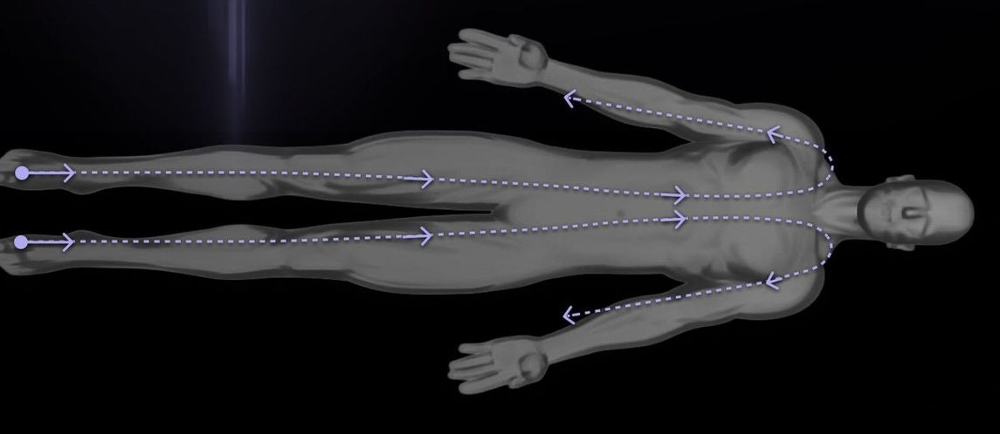
The light follows the body scan path
2Decision 2 of 3
Light, air, and vibration, each with one job
With no screen, the garment itself has to lead the exercise. So I gave each channel one job:
HeadFeet
Light
Light flows along the garment and shows where to focus.
Breathe inBreathe out
Air
Air fills and empties a soft chamber to set the breathing rhythm.
Key points
Vibration
Vibration gives a gentle cue at key points.
3Decision 3 of 3
A close fit that still lets you move
The cues follow the path of the body scan, so they have to sit close to the body. But the garment also has to let people move. I drafted 2D patterns, refined the fit in CLO 3D, and made mock-ups.
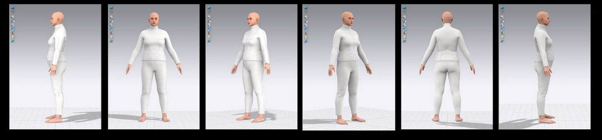
Refining the fit in CLO 3D
For stretch
66% nylon34% spandex
For the air chamber
PVC inflatable composite
05 · Prototype and test
I built a working prototype and tested it with an older adult living with anxiety
How it works
A GSR sensor picks up tiny changes in skin sweat, which tend to rise with stress. When the reading passes a threshold, an Arduino starts the body scan. The light moves through eight segments on the garment. I wrote the code that keeps the air pump and the light in step with a breathing rhythm. When it’s time to breathe out, the light dims and the pump stops.
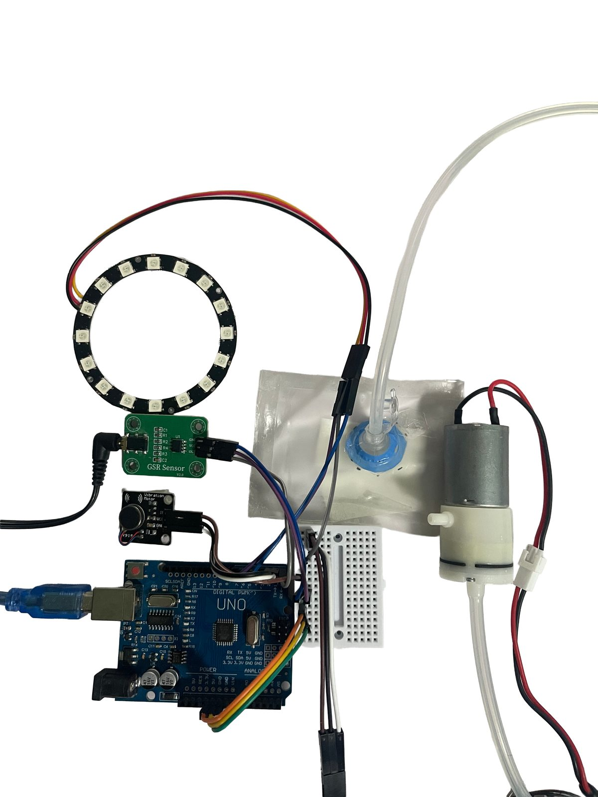
Light
GSR sensor
Vibration motor
Arduino
Air chamber
Air pump
Light
GSR sensor
Vibration motor
Arduino
Air chamber
Air pump
The parts: GSR sensor, Arduino, light, vibration motor, and air pump
How the garment responds
01
Stress rises
02
GSR passes the threshold
03
Arduino starts the scan
Light
Moves from feet to head
Air
Sets the breath
Vibration
Cues key points
Breathe out
The light dims and the pump stops
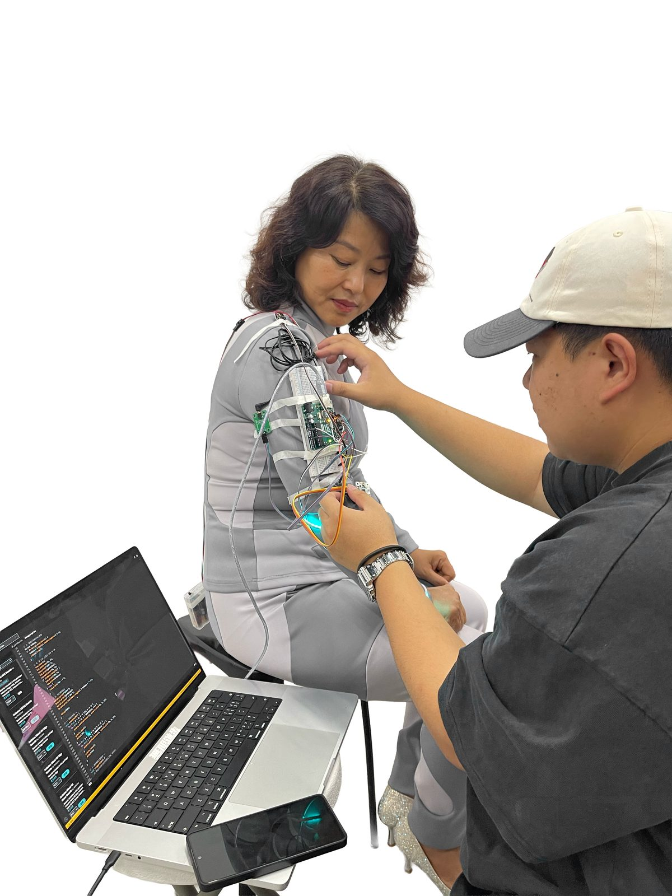
Fitting and testing the prototype
Then I ran a fitting and test session with an older adult living with anxiety.
What the test showed
Worked
The light flow felt calming and easy to follow.
To fix
The vibration was too soft.
To fix
The breathing cue had no clear start.
It was a small test: one person, one session. But it showed me what to fix first.
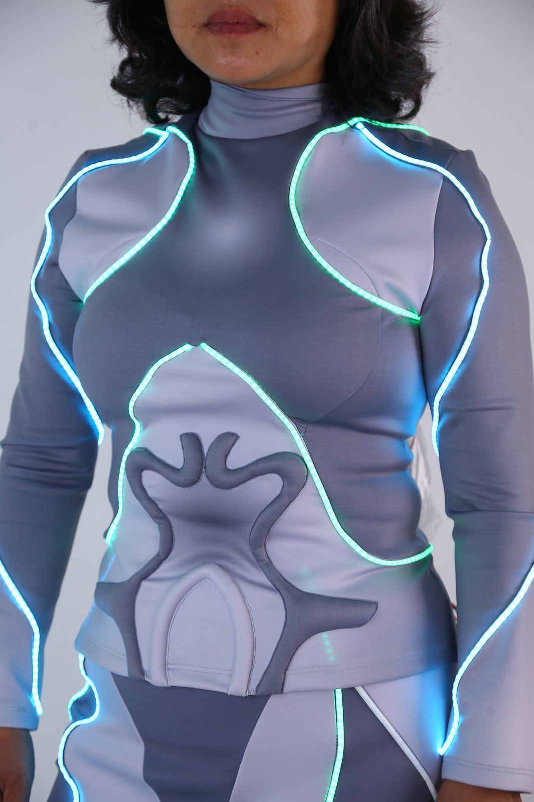
The finished garment
06 · Result
What I made
01
A working prototype: the garment, sensor, light, air chamber, and vibration
02
A demo video
03
Three clear findings for the next version
What I learned
Even one session changed my plan. The light worked, but the vibration and the breathing cue needed more work.
Make the vibration stronger, and let people adjust it.
02
Add a clear signal before each breath begins.
03
Test with more older adults, at home, over several days.
Final
Product showcase
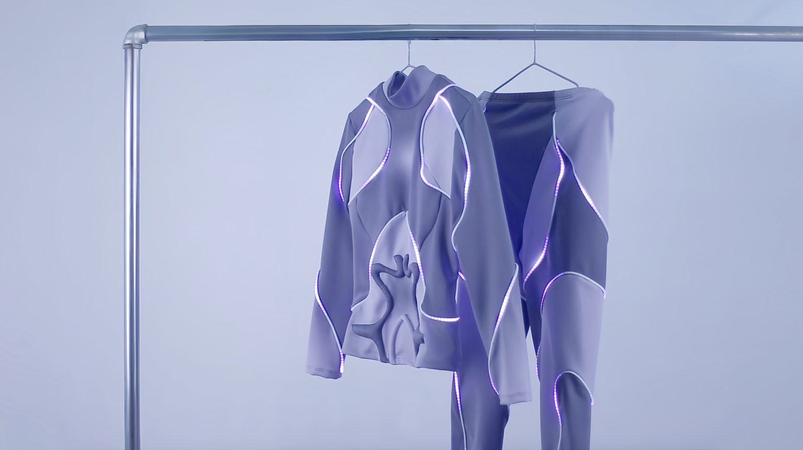
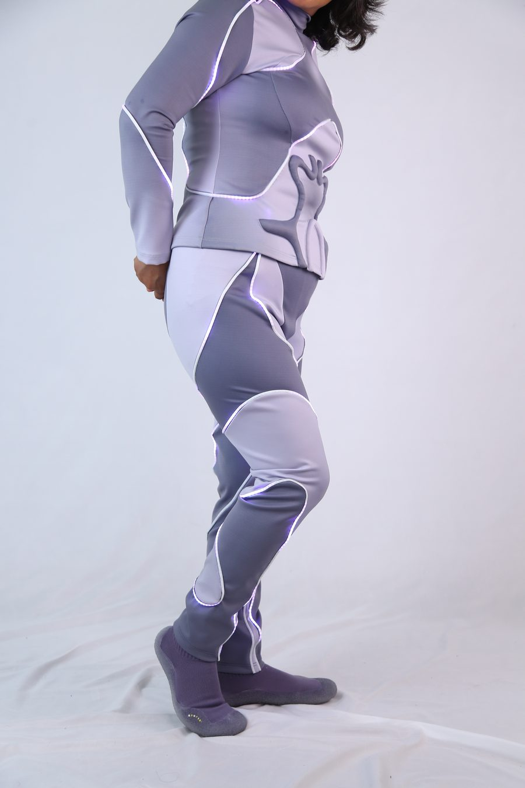
The garment offers a form-fitting silhouette that hugs the body's contours and is both structured and futuristic. It fits closely to the torso and limbs, outlining natural body lines while leaving enough stretch for movement.
Product features
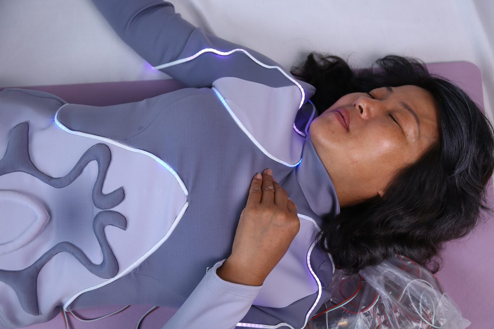
Haptic feedback
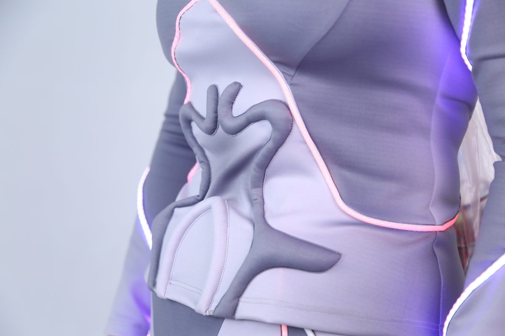
Adjust breathing rhythm
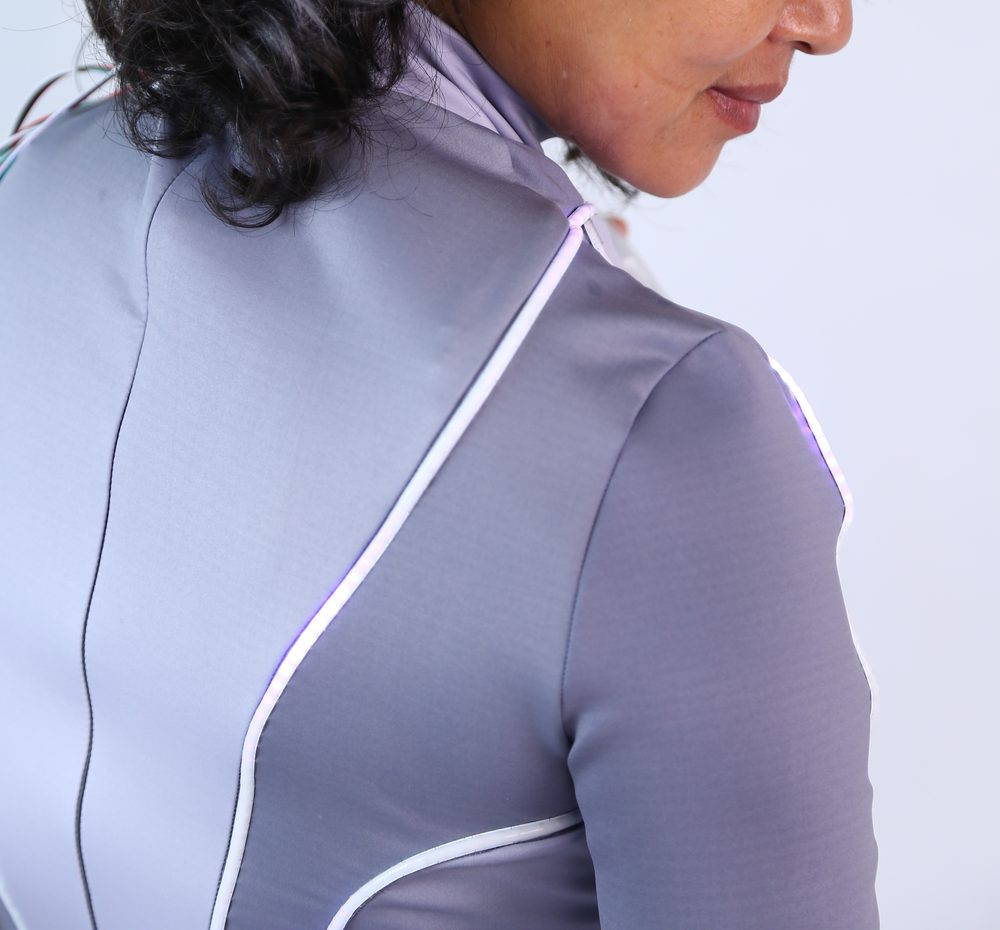
Flowing light beam
A flowing light beam sets a calming visual rhythm, breathing cues guide the pace, and haptic feedback adds gentle tactile signals. Together they create a clear, intuitive multisensory experience.